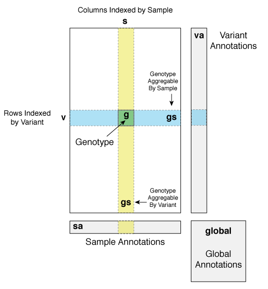

Overview¶
A typical workflow in Hail begins with importing genotype data from a standard file format such as VCF, PLINK Binary files, GEN, or BGEN files into Hail’s Variant Dataset format. Next, samples and variants are annotated with additional meta-information such as phenotype for samples and functional consequence for variants. Samples, variants, and genotypes are filtered from the dataset based on expressions constructed using Hail’s Domain-Specific Language. Once the dataset has been cleaned, various analytic methods such as PCA and logistic regression are used to find genetic associations. Lastly, data is exported to a variety of file formats.
Variant Dataset (VDS)¶
Hail represents a genetic dataset as a matrix where the rows are keyed by Variants, the columns are keyed by Samples, and each cell is a Genotype. Variants, Samples, and Genotypes each have methods to access attributes such as chromosome name, sample ID, and genotype call. Although this representation is similar to the VCF format, Hail uses a fast and storage-efficient internal representation called a Variant Dataset (VDS).
In addition to information about Samples, Variants, and Genotypes, Hail stores meta-data as annotations that can be attached to each variant (variant annotations), each sample (sample annotations), and global to the dataset (global annotations). Annotations in Hail can be thought of as a hierarchial data structure with a specific schema that is typed (similar to the JSON format). For example, given this schema:
va: Struct {
qc: Struct {
callRate: Double,
AC: Int,
hwe: Struct {
rExpectedHetFrequency: Double,
pHWE: Double
}
}
}
The callRate variable can be accessed with va.qc.callRate and has a Double type and the AC variable can be accessed with va.qc.AC and has an Int type.
To access the pHWE and the rExpectedHetFrequency variables which are nested inside an extra struct referenced as va.hwe, use va.qc.hwe.pHWE and va.qc.hwe.rExpectedHetFrequency.
Expressions¶
Expressions are snippets of code written in Hail’s Expression Language referencing elements of a VDS that are used for the following operations:
The abbreviations for the VDS elements in expressions are as follows:
| Symbol | Description |
|---|---|
v |
Variant |
s |
sample |
va |
Variant Annotations |
sa |
Sample Annotations |
global |
Global Annotations |
gs |
Row or Column of Genotypes (Genotype Aggregable) |
variants |
Variant Aggregable |
samples |
Sample Aggregable |
Which VDS elements are accessible in an expression is dependent on the command being used.
Define Variables to Export¶
To define how to export VDS elements to a TSV file, use an expression that defines the columns of the output file. Multiple columns are separated by commas.
Export the variant name
v, the PASS annotationva.pass, and the mean GQ annotationva.gqStats.meanto a TSV file. There will be one line per variant and the output for the variant columnvwill be of the form contig:start:ref:alt. No header line will be present!!v, va.pass, va.gqStats.meanSame as above but include a header with the column names “Variant”, “PASS”, and “MeanGQ”
Variant = v, PASS = va.pass, MeanGQ = va.gqStats.meanExport the sample name
s, a sample annotation for the number of het callssa.nHet, and a sample annotation for case statussa.pheno.isCase. There will be one line per sample. The header line will be “Sample”, “nHet”, and “Phenotype”.Sample = s, nHet = sa.nHet, Phenotype = sa.pheno.isCaseExport all annotations generated by
variant_qc()Variant = v, va.qc.*
Input Variables to Methods¶
The linear and logistic regression commands utilize expressions containing sample annotation variables to define the response variable and covariates.
Linear regression command defining the response variable and covariates from sample annotations
>>> vds.linreg('sa.isCase', covariates='sa.PC1, sa.PC2, sa.PC3, sa.AGE')
Filtering¶
Filter commands take a boolean expression. Here are some examples of boolean expressions using VDS elements:
Variant chromosome name
v.contigdoes not equal “X” or “Y”v.contig != “X” && v.contig != “Y”Sample id
sdoes not match the substring “NA12”!("NA12" ~ s)Sample annotation for whether a sample is female
sa.isFemale, which is a boolean variablesa.isFemaleVariant annotation for whether a variant has a pass flag
va.pass, which is a boolean variableva.passVariant annotation for the quality score
va.qual(numeric variable) is greater than 20va.qual > 20Expression that combines attributes of both
vandva(va.qual > 20 && va.pass) || v.nAlleles == 2Expression that combine attributes of both
sandsa"CONTROL" ~ s || !sa.pheno.isCase
Add New Annotations¶
To add new annotations, define an equation where the left-hand side is the name (path) of the new sample annotation and the right-hand side is the result of evaluating an expression with VDS elements.
Computed From Existing Annotations¶
Add a new variant annotation called
passAllwhich is the result of a boolean expression evaluating other variant annotation variablesva.passAll = va.pass && va.meanGQ > 20 && va.meanDP > 20Add a new sample annotation called
batch1which is the result of a boolean expression comparing an existing boolean sample annotation variable to the string “Batch1”sa.batch1 = sa.cohort == "Batch1"Add a new boolean sample annotation based on the length of the sample ID
sa.idTooLong = s.length > 10Add a new variant annotation that is a String representing the chromosome and start position
va.altName = v.contig + ":" + v.startAdd a new variant annotation that splits a comma-separated string with gene names and keeps the first element of the resulting array
va.geneName = va.geneNames.split(",")[0]Add a new variant annotation that is the log of an existing annotation
va.logIntensity = log(va.intensity)Add a new global annotation computed from existing global annotations
global.callRate = global.nCalled / global.nGenotypes
Variant Annotation Computed from a Genotype Aggregable (gs)¶
In the context of creating new variant annotations, a genotype aggregable (gs) represents a row of genotypes in the variant-sample matrix.
The result of evaluating the genotype aggregable expression per row is added to the corresponding variant annotation.
The map function takes a lambda expression as input (g => ...). The filter function takes a boolean lambda expression as input (g => Boolean Expression).
Transform the genotype aggregable to an aggregable of GQ scores using the
mapfunction and then calculate summary statistics on the GQ scores with thestatsfunction.va.gqStats = gs.map(g => g.gq).stats()Filter the genotype aggregable based on case status (
sa.pheno.isCase) and genotype call (g.isHetandg.isHomVar) and then count the number of elements remainingva.caseMAC = gs.filter(g => sa.pheno.isCase && g.isHet).count() + 2 * gs.filter(g => sa.pheno.isCase && g.isHomVar).count()Define a filtered genotype aggregable from cases (
sa.pheno.isCase) using thelet..insyntax and then use the case-only genotype aggregable to calculate the fraction of genotypes calledva.caseCallRate = let caseGS = gs.filter(g => sa.pheno.isCase) in caseGS.fraction(g => g.isCalled)Count the number of genotypes remaining after filtering the genotype aggregable to genotypes with a variant allele (
g.isCalledNonRef) and then create a boolean variable by comparing the result to 1va.isSingleton = gs.filter(g => g.isCalledNonRef).count() == 1
Sample Annotation Computed from a Genotype Aggregable (gs)¶
In the context of creating new sample annotations, a genotype aggregable (gs) represents a column of genotypes in the variant-sample matrix.
The result of evaluating the genotype aggregable expression per column is added to the corresponding sample annotation.
The map function takes a lambda expression as input (g => ...). The filter function takes a boolean lambda expression as input (g => Boolean Expression).
Filter the genotype aggregable to only genotypes that have a heterozygote call (
g.isHet) and count the number of elements remainingsa.numHet = gs.filter(g => g.isHet).count()Count the number of elements remaining after filtering the genotype aggregable to only genotypes where the corresponding variant annotation is True for
isSingletonand the genotype call has a variant allele (g.isCalledNonRef)sa.nSingletons = gs.filter(g => va.isSingleton && g.isCalledNonRef).count()Count the fraction of genotypes per sample where the genotype call is defined
g.isCalledsa.callRate = gs.fraction(g => g.isCalled)
Global Annotation Computed from a Sample Aggregable (samples)¶
In the context of creating new global annotations, a sample aggregable (samples) represents iterating over all samples in the VDS.
The map function takes a lambda expression as input (s => ...). The filter function takes a boolean lambda expression as input (s => Boolean Expression).
Add a global annotation by filtering the samples aggregable to samples where the sample annotation
sa.pheno.isCaseevaluates to True and then count the number of elements remaining.global.nCases = samples.filter(s => sa.pheno.isCase).count()Add an array of passing sample IDs to global annotations by filtering the samples aggregable where the sample annotation
sa.passevaluates to True and then collecting the resultglobal.passingSamples = samples.filter(s => sa.pass).collect()
Global Annotation Computed from a Variant Aggregable (variants)¶
In the context of creating new global annotations, a variant aggregable (variants) represents iterating over all variants in the VDS.
The map function takes a lambda expression as input (v => ...). The filter function takes a boolean lambda expression as input (v => Boolean Expression).
Count the number of elements in the variants aggregable and assign it to a new global annotation
global.nVariantsglobal.nVariants = variants.count()Filter the variants aggregable to variants where the variant annotation
va.isSingletonevaluates to True, count the number of elements remaining, and assign it to a new global annotationglobal.nSingletonsglobal.nSingletons = variants.filter(v => va.isSingleton).count()